As a part of the Google UX Design Certificate, I designed a mobile ordering app for a fancy bakery as part of my case study. I named the store FreshlyBaked, a regional bakery in a metropolitan area. It strives to provide high-quality products to its customers.
View high-fidelity prototype →
| Roles | Tool | Date |
|---|---|---|
| UI/UX Design | Figma | 2022 |
| User Research |
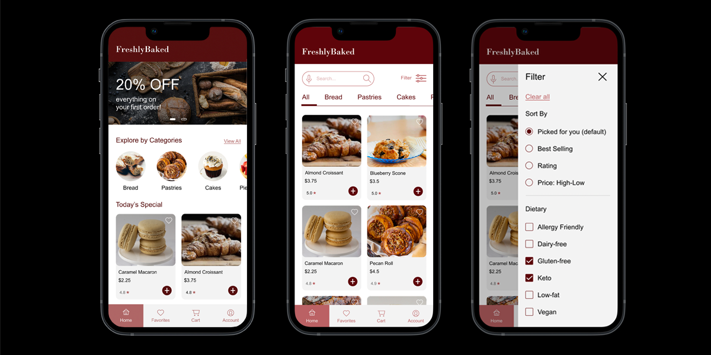
The Problem
Busy workers and commuters lack the time and knowledge to bake at home.
The Goal
Design an app that allows users to easily place orders via the app, and choose their preferred delivery/pick up method.
My Role
UX designer designing an app for FreshlyBaked from conception to delivery.
Responsibilities
Conducting interviews, paper and digital wireframing, low and high-fidelity prototyping, conducting usability studies, accounting for accessibility, and iterating on designs.
User Research: Pain Points
User Research: Summary
I conducted interviews and created empathy maps to understand the users I'm designing for and their needs. A primary user group identified through research was users who are too busy to spend time on baking. This user group confirmed initial assumptions about FreshlyBaked's customers.
Personas
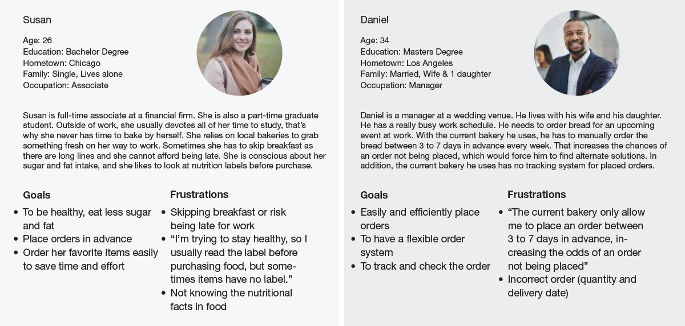
Storyboards
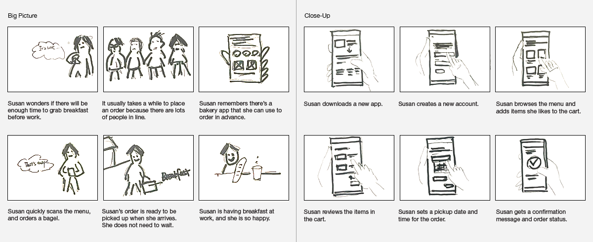
User Journey Map
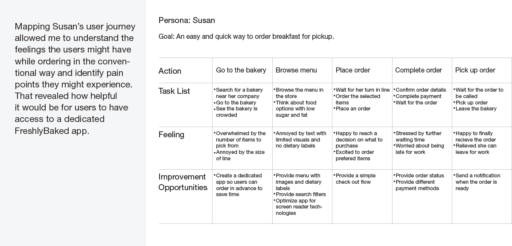
Paper and Digital Wireframes
After sketching several versions of how to structure infomation on the page, I narrowed down the design into a single refined wireframe, and transfered it to the digital wireframe.
User Flow and Digital Wireframes
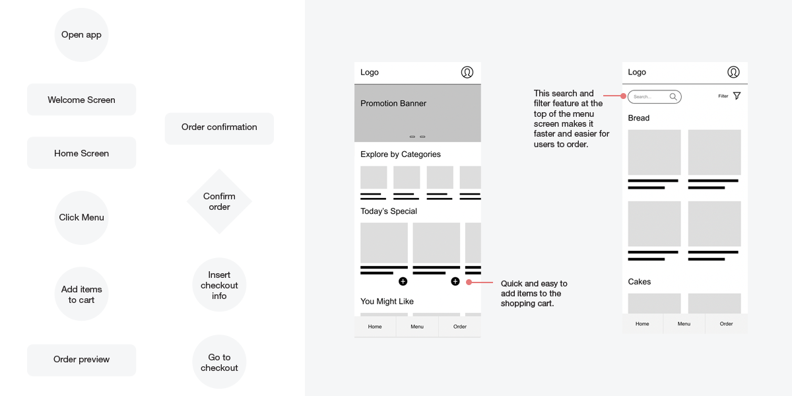
Low-Fidelity Prototype
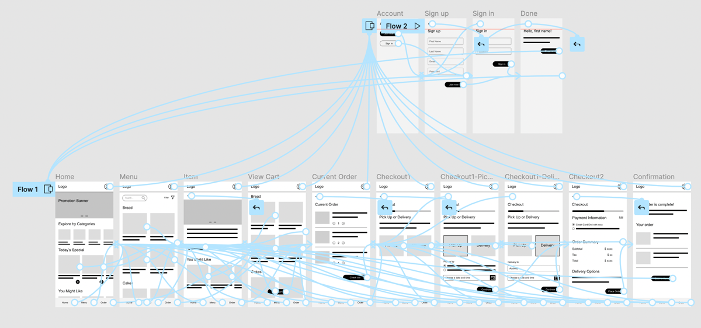
Usability Study: Findings
I conducted two rounds of usability studies. Findings from the first study helped guide the designs from wireframes to mockups. The second study used a high-fidelity prototype and revealed what aspects of the mockups needed refining.
Round 1 Findings
• Users want a quick way to create a profile
• Users want to remove an item from the cart
Round 2 Findings
• Users want an easy way to find products
• Users want a flexiable paymen method (ApplePay)
• Users want a weekly subscription
Mockups
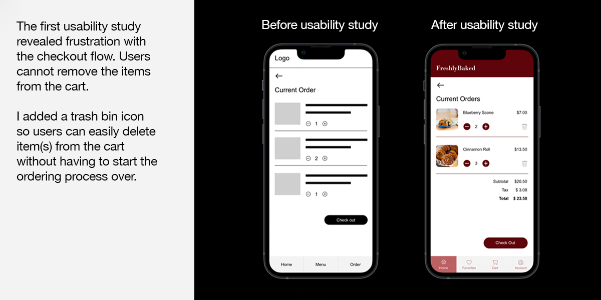
Mockups
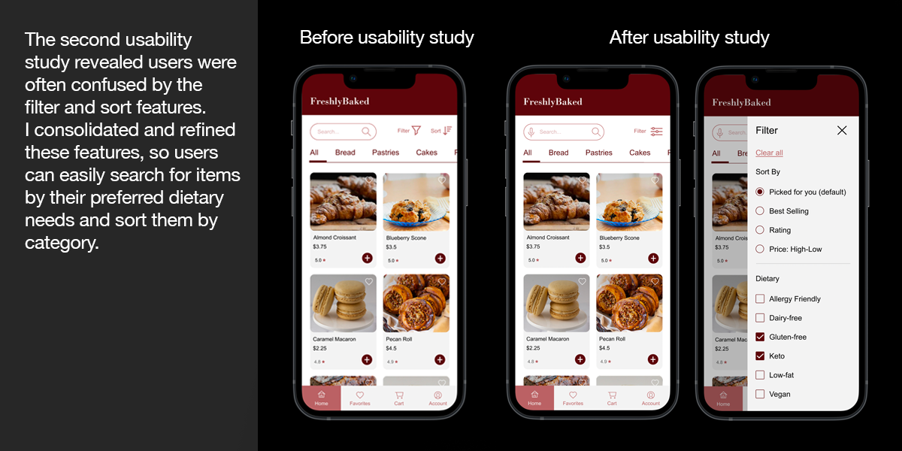
Key Mockups
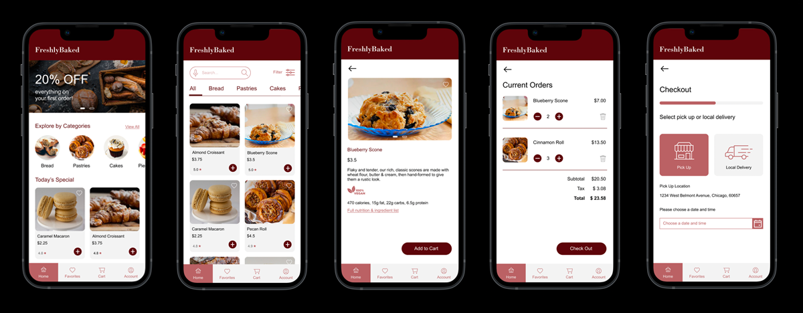
High-Fidelity Prototype
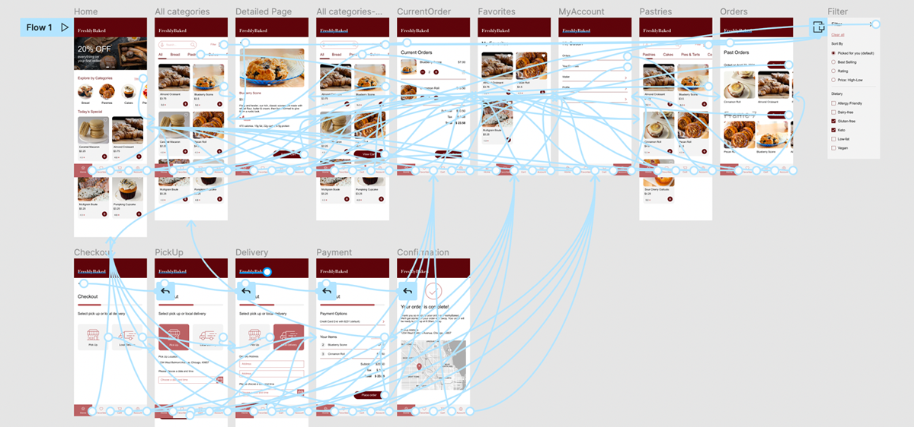
High-Fidelity Prototype
The final high-fidelity prototype presented cleaner user flows for ordering bakery goods and checkout. It also met user needs for strict dietry needs as well as a pickup or delivery option.
Accessibility Considerations
Takeaways
Impact
The app makes users feel like FreshlyBaked really thinks about how to meet their needs. They put users at the forefront and attempts to provide them with a good experience.
User feedback: “It was very easy to place orders. Being able to place orders and select a pick up option ahead of time is a great time-saver. Keeping my diet would be way easier if I had a bakery with an app like this around me! The search and nutrition label functionalities are of great help.”
What I learned